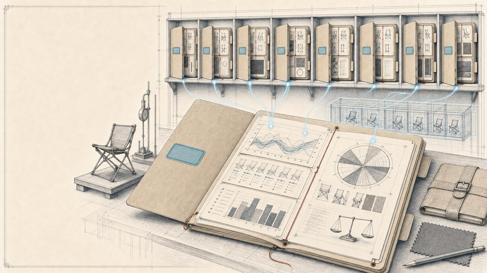

Leadership Brief · S29
The Project Folder,
Made Visible
S29 — this season’s portfolio board
One product, one folder. One holder at a time. Never thrown — taken. The wall shows the rest.

Leadership Brief · S29
S29 — this season’s portfolio board
One product, one folder. One holder at a time. Never thrown — taken. The wall shows the rest.
When ownership was possession
The paper office · one folder, one place, one pair of hands
Modern tools · everything visible, nothing held
We are not going back to paper. We are taking back the one thing paper did better: at every moment, one named person has it.


Fig. 2 — The full folder with the blank routing label
What S28 taught us
S28 did real work as an evidence archive — the folders are full.
Evidence-rich, command-poor. The work is in the folder; the holder, destination, and date are not on the cover. That is S29’s job.
Live Innovation S28 board snapshot · 199 open cards · Aug. 2, 2026 · read-only analysis
What S29 changes
The folder moves. The history stays together.
Hover a station — each one adds to the same folder.
Fig. 3 — The folder’s timeline · Example label and holders illustrative
The portfolio view
Where is each product, who is holding it, and what moves it forward — answered without asking anyone.

Fig. 4 — The visible folder wall
The operating contract
Who has it, what result comes next, when it is due, and where it goes — on the cover, in plain language.
One Current Action: the single result controlling portfolio progress now.
NO NEW VOCABULARY OR CEREMONY · SECONDARY: TARGET RELEASE / MILESTONE · BLOCKED REASON, IN PLAIN LANGUAGE, WHILE BLOCKED
Shown filled in — illustrative · the trail-chair folder
Fig. 5 — The actionable folder label · Names illustrative
The pull rule
Setting it on someone’s desk is not a handoff. Neither is moving a card.

Why insist on taking? A folder that must be taken can’t be dumped on anyone invisibly. Until the next owner is ready, it waits on the wall — where waiting is visible — not in an inbox, where it isn’t. Factories have run on this rule for seventy years: work moves when the next station pulls it. That is what keeps every queue honest.
HengFeng may build the sample, but a named internal owner holds the folder through the request, the chase, the review, and the acceptance of what comes back.
The discipline, priced by role
| Everyone | Plain language on the folder. No tokens, no jargon, no ceremonies. |
|---|---|
| Current Owner | Keep the five label fields true. Say so, in plain words, when blocked. |
| Next Owner | Take the folder explicitly — one acceptance comment. |
| Portfolio Owner / PM | Own the folder through release. |
| Development approver | Personally record one decision — APPROVED FOR DEVELOPMENT — at one gate. |
| Leadership — all of us | Run reviews from the board. Correct missing status on the folder, not out loud. |
The last row is the one that decides whether this works.
The clerical staff, without hiring one
The paper office had file clerks and registrars keeping folders moving. The agents are that staff: they remember, remind, brief, and fetch. People decide.

Fig. 7 — The services point, gather, and explain · People retain every decision
Agents never invent owners, dates, acceptance, approvals, priorities, or business decisions. The gate approval is always typed personally. The board remains fully usable with every agent switched off.
This is why the label stays cheap to maintain: the staff does the remembering; people do the deciding.
The decision dividend
Tracking is the floor. The reason to keep the folders true is what they can tell us.
On one folder — available immediately
Across the wall — compounding over the season

Fig. 8 — The season ledger · Illustrative — the real ledger accumulates from live use
S30’s board gets designed from S29’s evidence — not from anecdotes.
These are measures of folders and flow — never of people.
This season’s rollout
The sequence
Run reviews from the board. If the folder is wrong, fix the folder.
The first 90-day ledger
One product, one folder. One holder at a time. Never thrown — taken. The wall shows the rest.
Keep the methodology in the background. Expose the decision or action it produces. · Leadership Brief · S29 Portfolio Command · August 2026